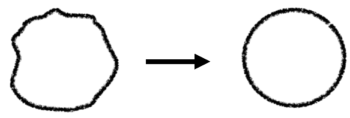
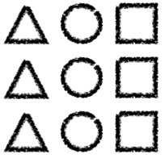

Interaktive Systeme
1 - Übersicht über die Veranstaltung
Vorlesung
- Zusammenfassung im Folgenden
Projekt
- Praktische Umsetzung eines interaktiven Systems
- Verwendung eines Nutzerorientierten Ansatzes
- Umsetzung auf Basis des Prototyping-Werkzeugs Pidoco
Abschlusspräsentation
Abschlussgespräch
2 - Die geschichtliche Entwicklung des Feldes HCI
Grober Verlauf
- Use the Machine
- design was engineering design:
make faster, bigger machines, expose their guts through controls
- people adapt to the machines
- people speak the language of the machines
- elaborate efforts to prepare problems for the machines
- no designers involved, but lots of clever engineers
⇒ emergence of a new set of skills, new disciplines
- in the meantime, the field of human factors is blooming
(along with things like “aviation psychology”)
- Use the Software
- shift in focus
- from controlling the computer
- to using applications and tools
- trying to make it so people have to adapt less to use the machines
- design is still done mostly by engineers, few specialists
- still mostly thought of as “computer human factors”
Perform a Task
- wordstar was so complex yet so popular,
it invited both complaint and competition
- the success of Lotus 1-2-3 over Visicalc
- was partly due to ease of use and appropriate power
- and its enterprise-penetrating platform, the IBM PC
- its use in large companies led to an emphasis
- on ease of learning,
- ease of use,
- reduced errors,
- saved time
- this eventually led to a professional emphasis on people doing a task rather than “a tool with good controls”
- Experience
- after twenty years of trying to help people perform tasks,
we realized success depended on expanding the scope of view
- most good work now involves an effort to fit
context of use, characteristics of individuals, patterns of life
- most good work now attempts to go beyond expressed need
to latent or masked needs
- Connect
- we are used to designing for individuals
- we’re learning to account for differences in individuals.
But the machines often stay most prominent
- now, more often, the machines fade to the background
we design for what happens between people through the machines
- we enable people to build things together through the machines
the construction is in the foreground, not the technology
- and now we are learning to account for variations in groups, genres of connections
Dynamically Enable
- some are beginning to imagine (and work toward) a day when we complete the shift...
- from “we adapt to the machines”
- to “our environment and tools adapt to us as we move through life”
- the best examples have yet to be imagined, but here are two I’ve heard mentioned, just so you get the idea:
- why do I have to convert this to pdf format to share it with you? why doesn’t the act of sharing imply some sort of conversion from authoring format to reading format?
- I like to listen to “Morning Edition” on the radio in the mornings. Why shouldn’t the broadcast follow me from bathroom to bedroom to kitchen, then into the car?
Quelle: http://www.slideshare.net/mrettig/interaction-design-history
3 - Beispiel: OLB Baufinanzierung
Ansätze
- Interview mit Stakeholdern
- Paper-/Wireframe-Prototyping
- Open Card Sorting
Iterative Design Phase
- Cognitive Walkthrough
- Usability-Test
Summary
- Ideas for a user oriented information architecture:
structure and word choice
- Feedback and ideas for concrete design ideas
- Rework of initial requirements
- Further insights into the subjects‘ mental model
- Very early and frequent user studies help to
constantly adjust the UI design to the user‘s needs
- Wireframe evaluation revealed
weaknesses in the designed information structure
- Open Card Sorting was very helpful for understanding
the users‘ mental model of website and of construction financing in general
- Expert and User Evaluations revealed
usability weaknesses and points of drop out
4 - User Requirements
Was macht Projekte erfolgreich?
- User Involvement
- Clear Statement of Requirements
Context of Use Analysis
Die Beschreibung des Context of Use ist ein Arbeitsdokument und gehört üblicher Weise zur User Requirements Specification. Es um fasst Folgendes:
- Benutzer- und Stakeholder-Gruppen
- Wer wird das System benutzen?
- Wer außerdem davon betroffen?
- Welche Charakteristiken haben diese Gruppen?
- Eigenschaften von diesen Gruppen
- Wissen, Fähigkeiten, Erfahrung, Bildung, Ausbildung
- Physische Fähigkeiten, Gewohnheiten, Vorlieben, Vermögen
- Ziele und und Aufgaben von Nutzern und dem System
- Art, auf die Aufgaben typischer Weise ausgeführt werden
- Häufigkeit und Dauer, Interdependenzen und parallel ausgeführte Aufgaben
- Gefahren, Auswrikungen auf Sicherheit und Gesundheit
- Umgebung des Systems:
- technisch: Hardware, Software
- physikalisch: Wetter, Beleuchtung, ...
- sozial: Arbeitsweisen, Organisationsstrukturen, Einstellungen
User Requirements Specification
The user requirements specification includes following information
- The intended context of use
- Requirements derived from user needs and the context of use
- e.g. specific requirement for the a product to be used outdoors
- Requirements arising from relevant ergonomics and user interface knowledge, standards and guidelines
- usability requirements and objectives, including measurable usability performance and satisfaction criteria in specific contexts of use
- Requirements derived from organizational requirements that directly affect the user
Methoden zum Analysieren der User Requirements
interative
- Data gathering activities
- Data analysis activities
- Expression as context description and requirements
Fragebögen
- Sequenz von Fragen zum Erheben von quantitativen oder qualitativen Daten.
- Oft aus Statistische Analyse ausgelegt.
Online Umfragen
- sind sehr effizient
- Schränken Benutzerkreis ein
Beispiele für Fragetypen
- Ja/Nein
- Check-Boxen
- Likert-Skalen (z.B. 5 oder 7 Stufen)
- Offene Fragen
- Grad an Zustimmung zu Aussagen
Vorteile
- Zeit- und Kosteneffizient
- Inhaltlich frei
- Relativ fehlerfrei wenn standardisiert
- Einfach zu verwalten
Nachteile
- Ergebnis hängt stark vom Befragten ab
- Vorauswahl durch eventuell nicht repräsentative Teilnehmer
Interviews
Strukturiertheit
- Offen
hohe Abhängigkeit vom Können des Interviewers
- Semi-strukturiert
- Strukturiert
weniger Kontextinformationen, einfacher zu interpretieren
Beispiele
- Interview users about users’ music listening habits
- Interview tourists information office employees about bicycle tourists issues
- Would you want to carry mobile devices in your household?
- How much would users/you pay for a new system that reminds you to take your medicine?
Vorteile
- Einfach, effizient und praktisch
- Zugriff auf schwierig zu beobachtende Werte
Gefühle, Emotionen, Eindrücke
- Hohe Validität Bedeutung hinter Aktionen können erfasst werden
- Nachfragen und Erläutern komplexer Fragen möglich
- Einfach aufzunehmen
Nachteile
- Abhängig vom Können des Interviewers
- Interviewer könnte Antworten beeinflussen
- Zeitaufwändig und teuer
- Nicht sehr verlässlich
- Ergebnisse sind schwierig zu verallgemeinern und zu generalisieren zumindest, wenn das Interview unstrukturiert war
Zielgruppen
Gruppentreffen
- 6 – 12 Teilnehmer
- Konzentration auf ein Thema durch Gruppendiskussion
- Heterogenität ist nützlich, aber nicht über Hierarchien oder bei gegensätzlichen Ansichten
Vorbereitung
- Zeit einplanen (1–3 Stunden)
- Fragen vorbereiten (4–10)
- TN einladen und Ziele erklären
- Material bereitstellen
Beispiele
- Ideen für Produktverbesserung erzeugen
- Kandidaten für ein Produktdesign vergleichen
- Hypothesen für eine Folgestudie entwerfen
Auswahl von Teilnehmern für eine Fokusgruppe
- produktive Balance zwischen langweiliger Ähnlichkeit und konfliktierender Unterschiedlichkeit
- Keine Leute aus unterschiedlichen Hierachiestufen der selben Firma
- Keine Leute mit radikal unterschiedlichen Ansichten
Verschiedene Fokus Gruppen für verschiedene Blickwinkel
- Männer und Frauen
- Manager und Verkäufer
Erwartete Gruppendynamik sollte konstruktive Diskussion erlauben
Planen einer Fokus Group Diskussion
- einmalig oder mehrmaliges Treffen
- jeweils 1 - 3 Stunden
- Audio-Aufnahme
- 4 - 10 Fragen
die Gruppendynamik provozieren
- einzelne Einladungen
mit Erklärung des Konzepts
- Diskussionsgegenstand anfassbar machen Demo vorbereiten, Prototypen bereitstellen
Ablauf
- Moderator keeps the group focused and the discussion moving
- Start with an introduction and provide name tags to participants
- Explain the rules of the discussion (e.g. confidentiality)
- Start with simple non-controversial questions
- Pose open-ended questions
- Avoid question that lead to specific answers
- Allow for diverse opinions and for equal opportunities in the discussion
- Encourage each participant to express their own point of view
- Consensus between participants is not required
- Capture or record the session (video, audio, note taking)
Vorteile
- Breit gestreute und qualitative Informationen
- Tiefgreifende Informationen
- Zeigt Common Sense und Konfliktpotenzial auf
- Möglichkeit, Ähnliche Themen anzuschneiden oder zu vertiefen
- Günstig und einfach
Nachteile
- Teilnehmer sind nicht repräsentativ
- Rolle des Moderators ist groß
kann Resultate beeinflussen
- Einzelne Teilnehmer können dominieren
- Nicht quantitativ
- Schwer zu verallgemeinern
Ethnographische Studien
Bei Ethographischen Studien begibt man sich in die Umgebung der Benutzer und nimmt am täglichen Leben teil.
Ansatz
- Wichtigkeit von gewohnten Aktionen ist schwer einzuschätzen
- als trivial empfundene Aktionen werden in anderen Methoden nicht kommentiert
Methode
- Beobachtung von Menschen in natürlicher Umgebung
Supermarkt, zu Hause, bei der Arbeit, ...
Ziel
- implizites Wissen aufdecken
- Verhalten verstehen
Vorgehen
Beispielaspekte
Pen&Paper
- Cheap and easy but unreliable
- Make structured observations sheets/tool
Audio/video Recording
Capturing behavior and context with cameras
- Including audio & still picture
- Provide moving pictures of regions important to task
- Provide information about the user context
Following a user with a camera
- Cheap and easy
- Captures everything, even details you haven’t considered before your observation
- Can be obtrusive, which might lead to behavior change user behavior when the subject feels be observed obtrusively
- Attracts attention of passing-by peoples and might change their behavior
Camera attached to the user may be useful
- Many cameras = many perspectives = many information
- Neck-lace camera, camera embedded into glasses, etc.
- Allow the observer to see “through the eyes” of the user
- Good for review/discussion with the user
Analysis of raw material is very time consuming!
- Up to 20h for 1h recording
- Automatically annotate video recordings
(E.g. time stamps, possibly triggered by events)
- Creates lots of data, potentially expensive to analyze
Sensor Based Recording
Bsp. and Bewegungssesnoren, Lagesensoren
Sensors
- Provide a truly objective measure
- Sensors are everywhere
(think about mobile phones, sensors in home automation, etc.)
- Sensors emerge into the background (i.e., they are pervasive), thus they are quite unobtrusive
Examples
- GPS (location, orientation, ...)
- Accelerometer (activity, device posture, ...)
- Microphone (environmental noise level, ...)
- Camera (is the user looking on the display, ...)
- Key-/Touch-Logger (interaction patterns, ...)
- Device State (which App is running, charging, ...)
Etc.
Bewgungsprofil
Analysis
- Analysis (e.g. identify clusters, ...)
- Display to the experimenter (for visual analysis)
- Display to the observed person (and let them comment)
- Combine with other observation techniques: Get me all video excerpts, where users have to input a password
Computer logging
- Reliable and accurate
- Limited to actions on the computer
- Include functionality in the prototype/product
Tagebuch
Methode
- Request to user to keep a diary style protocol
Inhalt
- Informationen zu Ort, Zeit, was passiert ist
- Alternativ zum Schreiben:
Diktiergerät, Kamera, E-Mail-Adresse, ...
- Hinterher intensives Interview
Conducting Diary Studies
- Provide participants with pen and paper to record their entries
- Provide participants with alternative means to record data
eMail address, voice recorder, photo camera, camcorder
- Provide a semi-structured format for recording entries
- Highly structured formats can prevent recording unanticipated events
- Unstructured formats might confuse: „How should I record my events?“
- Diary study should be followed up by in-depth interviews with participants
Pros
- Cheaper then location based ethnography
- Long term observation
- Very good to investigate context of use
Cons
- Depends on the users motivation
(might decrease early)
- Hard to find out, if diary is complete or what is missing
(not very reliable)
Task Analysis
- Möglichkeiten für neue Produkte finden
- Grundlegende Eigenschaften neuer Produkte identifizieren
Grundlegende Fragen
- Who is going to use the system?
- What tasks do they now perform?
- What tasks are desired?
- How often are the tasks carried out?
- What time constraints on the tasks?
- What knowledge is required to do the task?
- How are the tasks learned?
- Where are the tasks performed (environment)?
- What other information and tools are required to do the task?
- What’s the relationship between user & data?
- What is the procedure in case of errors and failures?
- Multi-user system: How do users communicate (CSCW Matrix)?
Hierachische Task Analyse (Task Decomposition)
Idee
- Abstrakte Aufgaben
- in konkretere Teilaufgaben
- und atomare Operationen aufbrechen
Fragen, die helfen
- Wie wird die Aufgabe getan?
- Warum führt der Benutzergerade diese Aufgabe aus?
Task Flows
- notwendiger Weise aufeinander folgende Subtasks
Task Alternatives
- sich gegenseitig ausschließende oder optionale Aufgaben
- Suchen
- Auswahl verstehen und dokumentieren
Task Analysis Diagramm
- Ergebnisse als Karte/Diagramm darstellen
- verschiedene Ebenen
- Alternativen, Sequenzen, Abfolgen
Bsp. Dateien Handhaben mit FileNetwork
- Dateien einsortieren
- Datei manuell einsortieren
- Vorschläge annehmen oder Verbindungen verwerfen
- Dateien heraussuchen
- aktuelle Dateien ansehen (Kreisansicht)
- zu älteren Dateien navigieren (Verbindungsansicht)
Contextual Task Analysis
erfasst außerdem
- Arbeitsumgebung
- organisatorische Faktoren
- Grenzen und Ausmaß der geistigen Fähigkeiten von Menschen
Empfohlene Methoden for Kontexuelle Aufgaben Analyse
- Ethnografische Studien
- Tagebuchstudien
- Experteninterviews
Ergebnis
- Übersicht der Aufgaben und deren kontextueller Umgebung
- wird für Ableiten von Usability Problemen genutzt
Beispiel
- lauter Anwendungskontext ⇒ kein akustisches Feedback benutzen
Studien durchführen
- Informationsblatt und Einverständniserklärung
- sind rechtlich und ethisch wichtig
- Proband muss informiert werden
Guidelines
- Wünsche des Stakeholders erfassen
- Alle Stakeholder beachten
- Mehr als einen Repräsentaten jeder Stakeholder-Gruppe
- Datenerhebungstechniken kombinieren
- Unterstützung durch Prototypen oder Aufgabenbeschreibungen
- Pilotstudie durchführen
- Daten aufnehmen
- Zeitnah mit der Interpretation beginnen
- Interpretation vor der Analyse (WTF?!)
Outline of an Ethical Proposal
- Studientitel
- Antragsteller
- Beschreibung Forschungsvorhaben
- Prüfplan/Kurzprotokoll
- Studienziel
- Wissenschaftlicher Hintergrund
- Studiendesign/-durchführung
- Mögliche Komplikationen und Risiken
- Kontrollmöglichkeiten und Gegenmittel
- Probandenrekrutierung
- Biometrie (Auswertungsverfahren)
- Archivierung und Datenschutz
- Anhänge
- Informationsblatt
- Einverständniserklärung
Anforderungsspezifikation
Personas
Problem
- Es allen recht machen zu wollen führt dazu, es niemandem Recht zu machen.
- Bsp: Auto
Ansatz
- Fiktionale Repräsentation eines typisches Nutzers erstellen
Ziel
- Repräsentative aber nicht durchschnittliche Personas
Aufgabe
- Menge an Personas erfinden
Alter, Geburtsort, Bildung, Beruf, Soziale Umgebung, Familie, Ziele und Fähigkeiten
Hintergrund-Informationen über die Benutzergruppe nutzen
- Quellen: Literatur, Interviews, Beobachtungen, Statistiken
Szenarien
Inhalt
- Erzählerische Beschreibung eines Anwendungsfalls
einfach, naturlichsprachlich, persönlich
- vielleicht auch Vision, wie das Produkt zukünftig benutzt werden könnte
Ziel
- Situationen auf viele Detailebenen beschreiben
betrachtet dabei auch den Kontext des Benutzers.
- Helfen Aspekte des Design-Projekts zu koordinieren
Dienen als Referenz, lenken Fokus auf Bedürfnisse der Nutzer
- Verbessern Verständnis dafür, wie das Produkt benutzt werden wird
Eignung
- sind guter Startpunkt für Design-Aktivitäten
Nutzen
- Encourage considering the characteristics of
the intended users, their tasks and their environment
- Usability issues can be explored
at a very early stage in the design process
- Help identify usability targets and likely task completion times
- Encourages a user-centred design approach
- Can also be used to generate contexts for evaluation studies
- Only minimal resources are required to generate scenarios
- Can be used by developers with little or no human factors expertise
Anwendungsfälle
Aus dem Software Engineering, nicht aus dem Interaktions Design
- A generalization that tries to capture the nature of a whole category of related activites
- Comes from software engineering rather than interaction design
- Used in later stages to determine that a product is functionally complete
- Focusing on low level user action and accompanying system response
- Precise behaviour is not part of a use case
More than one actor may participate in a particular use case
Interaktion mit der Funktionalität eines Systems
Aufgabe
- Establish the capabilities and constraints of the technology platform
which will limit UI design alternatives
Beschreibung
- Study the user interface capabilities and
constraints of the chosen technology platform for the product
Techniken
- Review platform documentation and expert interviews
Beispiele
- Output devices and parameters
(e.g. display size, audio and tactile capabilities)
- Input devices and parameters
(e.g. keyboard, touch screen, mouse, Wii)
- Network connectivity
- Performance
Vorwissen
State of the Art Analysis
Ansatz
- Vergleich von ähnlichen existierenden Systemen
- Automatisierte Analyse
z.B. mittels Logfiles
Typische Fragen
- What applications are used in the work process?
- What modules / functions of the application are used?
Literatur Recherche
- Research Papers
- Product reviews
- Books
- e.g. http://scholar.google.com
General Design Principles
Allgemeine Beispiele
- Shneiderman‘s „Eight Golden Rules of Dialog Design“
- ISO9241: Accessibility and Usability
- Mayhew‘s General Principles of User Interface Design
- IBM‘s Design Principles for tomorrow
- Platform guidelines
- Corporate Design guidelines
Domänenspezifische Beispiele
- Platform Guidelines
- Betriebliche Design Vorgaben
Zusammenfassung User Requirements
- Understanding users and context is important!
Several common techniques to gather data about users and context are available
- Surveys
- Ethnographic studies
- Task analysis
Results can be documented and further analyzed using
- Personas
- Scenarios
- Use Cases
Specifying user requirements is conducted interatively
- For example scenarios can be used as input for new surveys
UI Structure and Design
Einführung
Zielgruppe
- Einschätzung nach Demographie
Alter, Geschlecht, Ort, Bildung, Arbeit, Einkommen, Hobbys, Technishce Ausstattung, PC-Erfahrung
- Einschätzung nach Erfahrung und Verhalten
Anfänger, Fortgeschritten, Experte
Ziele
- Ziele der Anwendung
Unterhaltung, Bildung, Büro, Verwaltung, Kommunikation, Information, ...
- Ziele der Benutzer Wissen erlangen, einen Freund erreichen, ein Problem lösen, ein Dokument erstellen, ...
Inhalt
- sollte benötigt werden
⇒ keinen überflüssigen Inhalt zeigen! ⇒ Benutzerstudie zum finden des relvanten inhalts.
- muss gefunden werden
⇒ Inhalt navigierbar machen! ⇒ Richtigen Inhalt an richtiger Stelle!
- muss verstanden werden
⇒ Zusammenhänge vermitteln! ⇒ verständliche darstellungsform wählen! (Diagramm, Tabelle, Text)
⇒ Inhalt muss strukturiert und designt werden.
Strukturdesign
Struktur
- Hierarchien sind einfach
- gliedern Inhalt in logische Einheiten
- Ordnen nach
Wichtigkeit, Granularität, Erwartungen, Bedürfnissen
Faustregeln
- Lieber in die Breite als in die Tiefe gehen
- Maximale Tiefe: 5–6 Level
Ausrichtung und Navigation
Benutzerfragen
- Wo bin ich? → Brotkrumen-Navigation
- Was kann ich tun? → Beware the big button trap (???)
- Was passiert wenn ich dies tue?
- Wo komme ich her? / Wie komme ich zurück?
Faustregeln
- Visuelles sollten leicht zu merken sein
(Farben, Schriften, Bilder und Symbole)
- Ein Menü ist gut für Navigation und Orientierung
Weißraum:
Card Sorting
Methode
- Man fragt die Benutzer, wie sie Inhalt strukturieren und benennen würden
- Dabei werden Muster (=Mentale Modelle) gesucht
Gut geeignet
- für Menü-Kategorien und Navigation
- Designing new menu, website or application
- Redesigning a website or application
Inhalt vorauswählen
- auf ähnliche Granularität (Detaillevel) achten
- Ungefähr 30 Karten
Karten vorbereiten
- Kurze, schnell zu lesende aber aussagekräftige Begriffe
- Freie Karten um Begriffe zu ergänzen
Material
- beschriftete und freie Karten, Stifte, Gummibänder, Büroklammern, Klebstoff
Durchführung
- Teilnehmer sollten repräsentativ für die Benutzergruppe(n) sein
- Umfang: 15 – 30 Teilnehmer
- Teilnehmer einzeln oder
3 Teilnehmner pro Gruppe in 5 Gruppen
- vorher Material auf Tisch verteilen
- Am Anfang Einführung geben, dann beobachten und zuhören
Analyse
- Muster durch Ordnung auf dem Tisch, am Whiteboard, ...
- Unterschiede
- Unterschiedliche Sichtweisen der Informationen
- deuten auf fehlendes oder falsches Verständnis hin
- zeigen Content, der zu mehreren Bereichen gehören könnte
- alternative Wege zum selben Content
- Statistische Analyse Multidimensional Scaling, Hierarchical Cluster Analysis
Siehe auch
Bildschirmdesign und -layout
Gestaltgesetze
- Köhler, Koffka, Werheimer (Berliner Schule), 1912:
Gestaltpsychologie
- Basiert auf
Wahrnehmung, Bewegung, Gedächtnis, Denken, Lernen und Verhalten
- Insgesamt über 100 Gesetze
Inhalt
- Einfache Regeln für visuelles und auditorisches UI Design
- Hinweise auf zu erwwartende Benutzer-Reaktionen
auf räumliche und zeitliche Anordnung
- Gute UIs halten sich an Gestaltgesetze
für Verständlichkeit und Intuitivität
Beispiel-Gesetze
- Prägnanz: Einfache Formen 
- Nähe: Beieinander liegende Objekte sind zusammengehörig

- Geschlossenheit: Fenster-Metapher

- Ähnlichkeit: Ähnliche Formen gehören zusammen 
- Gute Fortsetzung: Kontinuierliche Formen gehören zusammen


- Erfahrung: Neue Informationen werden in bekannte Strukturen eingeordnet

- Gemeinsame Bewegung: Animierte Objekte in statischer Umgebung erscheinen als Gruppe

Farben
- Farben sind nie neutral, können Emotionen hervorrufen und sind oft unterbewusst wahrgenommen
- Einflüsse: Biologisch, Kulturell, Individuell
Wirkung
- Benachbarte Farben beruhigen
- Komplementäre Farben erzeugen Spannung
Faustregeln
- Maximal 4–5 Farben benutzen
- Farben konsistent benutzen
Bilder und Symbole
- Illustration, Dekoration, Strukturierung
- Bilder
- sparen Platz,
- sind leicht zu erkennen,
- Sprachunabhängig,
- einfach zu merken,
- unterbewusst wahrnehmbar
- Gute Bilder
- zeigen nur das wichtigste,
- kombinieren Bekanntes mit Neuem
- sprechen Emotionen an
Typographie
- strukturiert und hebt hervor
- beinhaltet Schriftart, Schriftschnitt, Größe, Farbe und Dekoration
Spaltenbreite
Keep in Mind
Think from a user’s perspective
- When, where and how will they use the system?
- What are their characteristics?
- Are they handicapped?
- What do they expect?
- What are they accustomed to?
- What do they like?
Design for the actual users
Gedächtnis und Aufmerksamkeit
Aufbau des Sehsystems
- Foliensatz 6, Folie 1 - 16
Aufmerksamkeit
- Geteilte Aufmerksamkeit: Auf alles gleichzeitig achten
(z.B. Autofahren)
- Selektive Aufmerksamkeit: Konzentration auf Einzelnes
(z.B. konzentriertes Arbeiten)
- Ausblenden von Störreizen
Physiologische Implementation von Selektiver Aufmerksamkeit
- Auge hat ausschließlich Zapfen in der Fovea ⇒ hoher Detailauflösung
- Ausrichtung des Auges auf interessantes Objekt ⇒ weniger detailierte Wahrnehmung von Uninteresssantem
- Fovea-Informationen werden aufwändiger verarbeitet
- Auge tastet Szene ständig ab
Mentale Implementation von Selektiver Aufmerksamkeit
- Konzentrieren auf Objekte außerhalb der Blickrichtung
Bsp: seitlich mitlaufende Mitspieler beim Basketball im Auge behalten
Bsp: Buchstaben anschauen beim Lesen, Wahrnehmen von Wörtern
Messen und Visualisieren
- Eyetracking head-mounted, remote (berührungslos)
- Saliency Maps (Aufmerksamkeitskarten)
Beispiel: HUMAN
- Modell zur Vorhersage von Pilotenfehlern
Implementiert Mechanismen des Menschlichen Verhaltens
Fixationen und Sakkaden
- Fixationen / Haltepunkte werden durch Sakkaden / Bewegungen angefahren
- Gesamtheit nennt man Scanpath
- Bewegung der Aufmerksamkeit
- ca, 3 Fixationen pro Sekunde
Einflussfaktoren des Blickverhaltens
- Eigenschaften der Szene
- Wissen des Betrachters
- Ziele des Betrachters
Stimulsalienz
- hoher Stimulus ⇐ helle Farbtöne, hoher Kontrast, Orientierung
- stimulierende Bereiche ziehen Aufmerksamkeit auf sich
Aufmerksamkeitsstärke / Salienz
- hängt allein von Rezeptorebene ab
Saliencymaps
- Karte eines Bildes, basierend auf Farbe, Kontrast und Orientierung
- Modellgetrieben, berechenbar
- kommt biologischer Stimulusalienz nahe
- zeigt erwartete Aufmerksamkeit
Betracherwissen
- Sobald Inhalt verstanden wurde, kann dieses Wissen die Augenbewegung beeinflussen
- mentales Schema kann helfen, Szene gezielt zu durchsuchen
Bildbedeutung
- bedeutungshaltige Areale werden stärker abgetastet
Bsp. Menschliche Gesichter
Aufgabenbewältigung
- Anforderungen der Aufgabe überwiegen Stimulussalienz
Bsp. Zubereitung eines Erdnussbuttersandwich
Skip
Gedächtnis
Multispeichermodell der MCI
Affordanzen a.k.a Angebotscharakter
- “An affordance is a quality of an object, or an environment,
which allows an individual to perform an action.”
Beispiel Stühle
- verhalten sich immer gleich
- rufen zum Sitzen auf
- Andere Aktionen gehen auch
- keine Erklärung nötig
Beispiel Türen
- haben Griffe
- können geöffnet werden
- Griff kann neuen Benutzern richtige Anwendung nahelegen
Knopf ⇒ Ziehen
Leiste ⇒ Drücken
Mappings
- Verbindung zwischen Userinterface Elementen und echter Welt
Ergebnis
- Sofortiges Verständnis
- Einfacher zu erinnern
- "ease of use"
Typen
There are several types of mappings including natural mapping which the designer considers spatial, additive, and substitutive dimensions to indicate the results of the controls.
- Gut, wenn natürlich
- räumliche Analogien
- physikalische Analogien
- kulturelle Standards
Beispiele
- räumlich
oben → aufwärts vorne → vorwärts
- wahrnehmbare Analogien
(Schalter sieht genauso aus, wie das, was er bedient)
- Andere Dimensionen
pitch, taste, colour, location
Zitat #1
“Mapping is a technical term meaning the relationship between two things, in this case between the controls and their movements and the results in the world.... Natural mapping, by which I mean taking advantage of physical analogies and cultural standards, leads to immediate understanding. For example, a designer can use spatial analogy: to move an object up, move the control up.... Some natural mappings are cultural or biological, as in the universal standard that a rising level means more, a diminishing level, less.... [However,] there is no natural concept of more or less in the comparison of different pitches, or hues, or taste qualities. Other natural mappings follow from the principles of perception, and allow for the natural grouping or patterning of controls and feedback.... The principles are simple, but rarely incorporated into design. Good design takes care, planning, thought. It takes conscious attention to the needs of the user. And sometimes, the designer gets it right.”
Quelle: http://www.thenewhumanities.net/books/Book%20Reviews46.html, Norman "The Design for Every Day Things":
Zitat #2
"Bei der Gestaltung von Abbildungen ist zudem die Stimulus-Antwort-Kompatibilität zu berücksichtigen. Danach soll die Bewegung eines Bedienelements in eine Richtung eine gleichartige Handlung bewirken. Ein einfaches Beispiel sind Lenkräder auf Schiffen und in Fahrzeugen, die eine Änderung der ahrtrichtung bewirken, die der Lenkradbewegung entspricht. Ein ungünstiges Mapping ist es demnach, wenn ein Winkel durch einen Slider eingestellt wird, also eine Rotation auf eine lineare Bewegung abgebildet wird. Dem Prinzip einer guten Stimulus-Antwort-Kompatibilität entsprechend sollten Pfeile, mit denen Benutzer in einem Dokument horizontal scrollen können, nebeneinander, ggf. durch einen Scrollbar getrennt, angeordnet sein. Pfeile, mit denen ein vertikales Scrollen möglich ist, sollten untereinander angeordnet sein."
Quelle: Interaktive Systeme - B. Preim und R. Dachselt, Kapitel 4, S.136-137
Constraints
- Einschränkungen sind das Gegenteil von Affordanzen und können diese Vergrößern
- Ziel: Benutzungsfehler vermeiden, Information, die erinnert werden muss, reduzieren
- Arten:
- Physikalisch: Schränken physische Operationen ein
z.B. durch eine Form
- Semantisch: Sich aus dem Kontext und dem Wissen über die Welt ergebene Einschränkungen
- Logisch: Das, was logisch erscheint
- Kulturell: Farben oder Schriften-abhängig
Konzeptuelle Modelle
- Modelle sorgen dafür, dass nicht über jede Handlung nachgedacht werden muss, sondern Dinge automatisch erledigt werden können.
Prinzip
- Ein Bekannter Begriff wird als Analogie zu einem unbekannten Sachverhalt verwandt
- Reduktion auf Kernmerkmale
Wichtigkeit
- vor allem for direkt-manipulative Systeme wesentlich
Chancen
- Benutzer
- Einstieghürden verringern
- Einarbeitung erleichtern
- Idee vermitteln
- Entwickler und Benutzer
Risiken
- Entwickler:
Einengen der Sicht auf vertraute Aspekte/Funkionalität
- Benutzer:
Unter- und Überschätzung des Systems
Usability Guidelines
- Definition: “The extent to which a product can be used by specified users to achieve specified goals with effectiveness, efficiency and satisfaction in a specified context of use.” [ISO 9241-11]
- Unterschied: Effektivität (ein Ziel erreichen) und Effizienz (ein Ziel mit minimalem Aufwand erreichen)
- Leaky Pipe Metaphor: Auf dem Weg zum Ziel werden Benutzer verloren (“Drop outs”), weil sie das Interface nicht richtig bedienen
- Vorteile guter Usability:
- gesteigerte Produktivität
- Glückliche Benutzer
- Weniger Kosten (Zeit, Geld, Gesundheit) (?)
- Es gibt Theorien, Prinzipien und Richtlinien (abstrakt nach konkret):
Theorien
- Kognition: GOMS, ACT-R
- Sinne: Sehen, Hören, Fühlen
- Bewegung: Fitts’ Law
Fitts’ Law
- Modell für die motorische Bewegung
- Besonders für schnelles Zielen
- Beschreibendes und vorhersehendes Modell
- Die Schwierigkeit einer Bewegung ist abhängig von der zurückzulegenden Distanz und der Größe des Ziels
- Kanten und Ecken sind am Besten zu erreichen
Prinzipien
- Shneiderman’s 8 Golden Rules of Interface Design
- Niesen’s 10 Heuristics for User Interface
- Tognazzini’s First (16) Principles of Interface Design
8 Goldene Regeln für Interface Design
- Konsistenz: Reihenfolge von Handlungen, Begriffe, Design
- Universale Usability: Menschen sind unterschiedlich
- Informative Rückmeldung: für jede Handlung muss es Feedback geben
- Abschließen von Dialogen: Nach Beendigung einer Aufgabe muss es abschließendes Feeback geben
- Fehler verhindern: z.B. falsche Eingaben
- Einfaches Rückgängig machen: gibt dem Benutzer Sicherheit
- Benutzerkontrolle: Der Benutzer sollte immer die Kontrolle haben
- Kurzzeitgedächtnis entlasten: es können nur etwa 7 ( ± 2) “Datenpakete” gemerkt werden
Richtlinien
- Finden sich z.B. oft in Betriebssystemen
- Navigation: Linktext sollte immer aussagekräftig sein, Überschriften eindeutig und beschreibend
- Organisation der Anzeige: Datenformate sollten einheitlich und bekannt sein, Eingabe sollte Anzeige entsprechen, Ausgabe sollte editierbar sein
- Aufmerksamkeit erlangen:
- 2 Stufen Instensität (Fettdruck)
- Unterstreichungen oder Pfeile
- Bis zu 4 Schriftgrößen
- Bis zu 3 Schriftarten
- Kein Blinken
- Bis zu 4 Farben
- Sanfte Töne = gut / Harte Töne = Fehler
Standards
ISO 9241
Dialogprinzipien nach ISO 9241-110:
- Angemessenheit: Der Dialog sollte den Nutzer unterstützen
- Selbsterklärung: entweder sofort verständlich oder auf Anfrage mit Hilfe versehen
- Kontrollierbarkeit: Der Benutzer kontrolliert, nicht der Computer
- Übereinstimmung mit Erwartungen
- Fehlertoleranz: Fehler sollen mehr oder weniger automatisch behoben werden
- Möglichkeit der Individualisierung
- Lernmöglichkeiten
User Experience vs. Usability
User Experience = Usability + Motivation + Emotionen + Werte
Prototyping
- Warum?
- Prototypen eignen sich für Nutzerstudien, den Nutzer wissen nicht, was sie wollen, sehr wohl aber was sie nicht wollen.
- Man kann Fragen beantworten (Funktioniert das Konzept?)
- Alternativen vergleichen
- Wann?
- Was?
- Ansätze
- Wegwerfprototypen (“rapid prototype”)
- Evolutionärerprototyp (wird weiterentwickelt)
- Inkrementeller Prototyp (ein Teil des Ganzen, wird später eingefügt)
- Horizontal (viele Features, wenig Funktionalität) ↔ Vertikal (ein Feature, volle Funktionalität)
- Li-Fi-Prototype (früh, billig, oberflächlich) ↔ Hi-Fi-Prototype (viele Details)
- Techniken
- Storyboarding
- Paper-Prototype
- Click-Prototype (GUI, z.B. Pidoco)
- Wizard-Of-Oz-Prototype (Mensch ersetzt Funktionalität)
Usability Evaluation 1 — Testing with Users
Usability Evaluation 2 — Analytical and Expert Methods